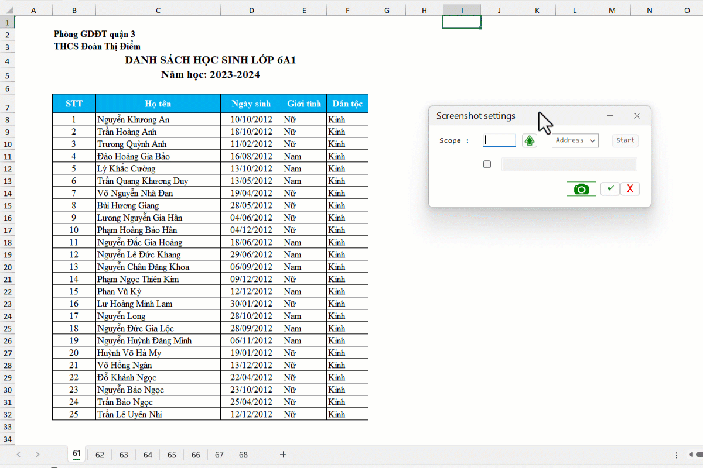

VD1: Chụp màn hình vùng cửa sổ tự tạo.
VD2: Chụp ảnh vùng chọn trên Excel.

1. Mặc định sử dụng phím tắt Ctrl+V để xuất hình ảnh.
2. Nếu muốn xuất thành file ảnh, tích vào mục checkbox và đặt đường dẫn tên file hoặc thư mục.
3. Tính năng này sử dụng hàm SELTOIMG của Add-in để thực thi, bạn đọc có thể gọi hàm từ VBA để chụp màn hình cửa sổ bất kỳ.
Related function
COLORIZER (feature) Tô màu, tuỳ chỉnh định dạng ký tự, font, màu sắc, đường viền của bảng tính.
LOCAL FOLDERS Quản lý file, thư mục cục bộ (local disk) từ Excel.
Return to Home